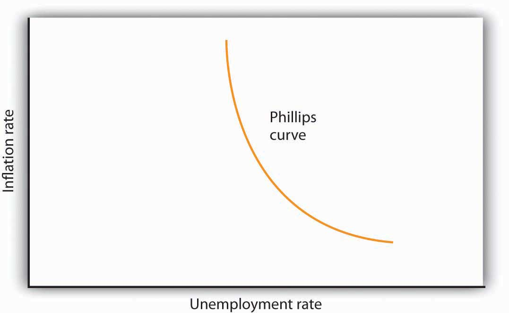
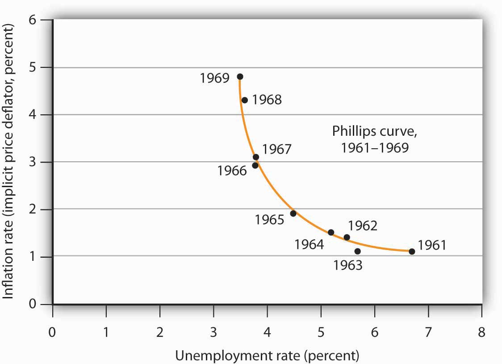
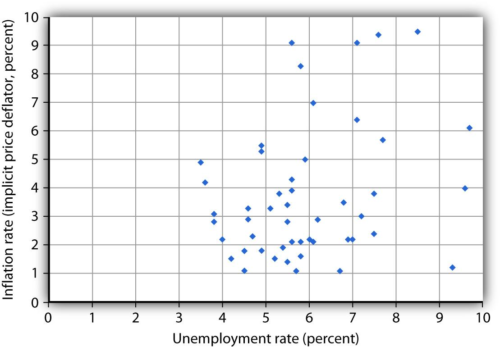
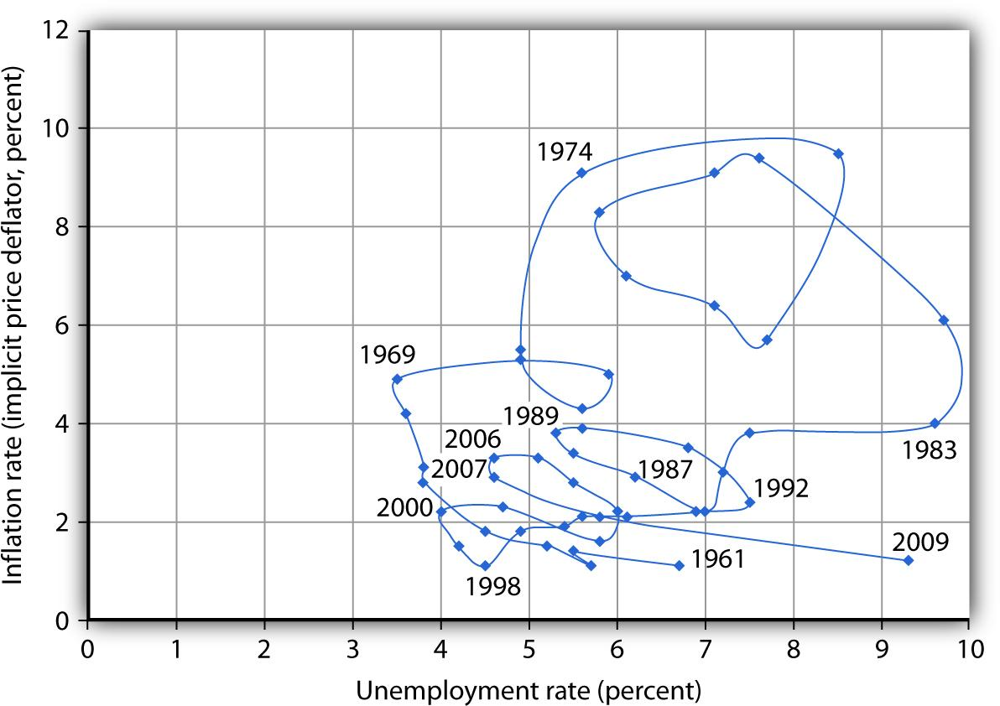
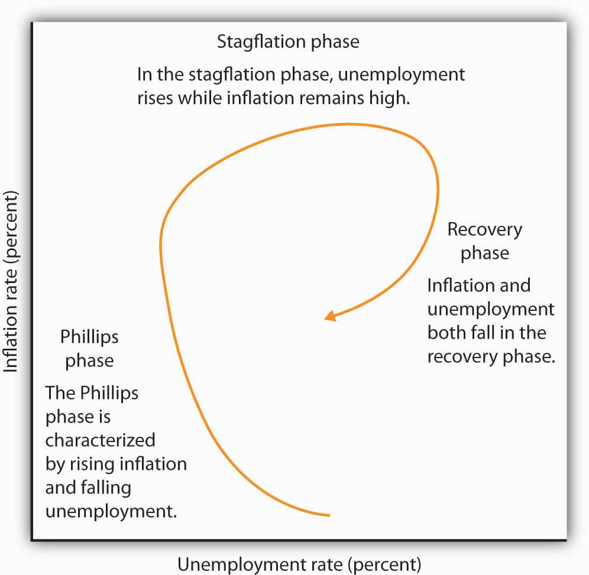
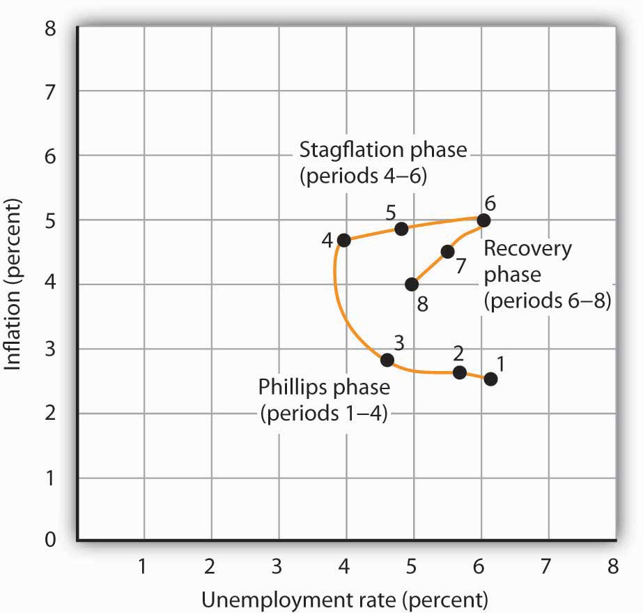

It has often been the case that progress against inflation comes at the expense of greater unemployment, and that reduced unemployment comes at the expense of greater inflation. This section looks at the record and traces the emergence of the view that a simple trade-off between these macroeconomic “bad guys” exists.
Clearly, it is desirable to reduce unemployment and inflation. Unemployment represents a lost opportunity for workers to engage in productive effort—and to earn income. Inflation erodes the value of money people hold, and more importantly, the threat of inflation adds to uncertainty and makes people less willing to save and firms less willing to invest. If there were a trade-off between the two, we could reduce the rate of inflation or the rate of unemployment, but not both. The fact that the United States did make progress against unemployment and inflation through most of the 1990s and early 2000s represented a macroeconomic triumph, one that appeared impossible just a few years earlier. The next section examines the argument that once dominated macroeconomic thought—that a simple trade-off between inflation and unemployment did, indeed, exist. The argument continues to appear in discussions of macroeconomic policy today; it will be useful to examine it.
In 1958, New Zealand-born economist Almarin Phillips reported that his analysis of a century of British wage and unemployment data suggested that an inverse relationship existed between rates of increase in wages and British unemployment.Almarin W. Phillips, “The Relation between Unemployment and the Rate of Change of Money Wage Rates in the United Kingdom, 1861–1957,” Economica 25 (November 1958): 283–99. Economists were quick to incorporate this idea into their thinking, extending the relationship to the rate of price-level changes—inflation—and unemployment. The notion that there is a trade-off between the two is expressed by a Phillips curveA curve that suggests a negative relationship between inflation and unemployment., a curve that suggests a negative relationship between inflation and unemployment. Figure 16.1 "The Phillips Curve" shows a Phillips curve.
Figure 16.1 The Phillips Curve
The relationship between inflation and unemployment suggested by the work of Almarin Phillips is shown by a Phillips curve.
The Phillips curve seemed to make good theoretical sense. The dominant school of economic thought in the 1960s suggested that the economy was likely to experience either a recessionary or an inflationary gap. An economy with a recessionary gap would have high unemployment and little or no inflation. An economy with an inflationary gap would have very little unemployment and a higher rate of inflation. The Phillips curve suggested a smooth transition between the two. As expansionary policies were undertaken to move the economy out of a recessionary gap, unemployment would fall and inflation would rise. Policies to correct an inflationary gap would bring down the inflation rate, but at a cost of higher unemployment.
The experience of the 1960s suggested that precisely the kind of trade-off the Phillips curve implied did, in fact, exist in the United States. Figure 16.2 "The Phillips Curve in the 1960s" shows annual rates of inflation (computed using the implicit price deflator) plotted against annual rates of unemployment from 1961 to 1969. The points appear to follow a path quite similar to a Phillips curve relationship. The civilian unemployment rate fell from 6.7% in 1961 to 3.5% in 1969. The inflation rate rose from 1.1% in 1961 to 4.8% in 1969. While inflation dipped slightly in 1963, it appeared that, for the decade as a whole, a reduction in unemployment had been “traded” for an increase in inflation.
Figure 16.2 The Phillips Curve in the 1960s
Values of U.S. inflation and unemployment rates during the 1960s generally conformed to the trade-off implied by the Phillips curve. The points for each year lie close to a curve with the shape that Phillips’s analysis predicted.
Source: Economic Report of the President, 2009, Tables B-3 and B-42.
In the mid-1960s, the economy moved into an inflationary gap as unemployment fell below its natural level. The economy had already reached its full employment level of output when the 1964 tax cut was passed. The Fed undertook a more expansionary monetary policy at the same time. The combined effect of the two policies increased aggregate demand and pushed the economy beyond full employment and into an inflationary gap. Aggregate demand continued to rise as U.S. spending for the war in Vietnam expanded and as President Lyndon Johnson launched an ambitious program aimed at putting an end to poverty in the United States.
By the end of the decade, unemployment at 3.5% was substantially below its natural level, estimated by the Congressional Budget Office to be 5.6% that year. When Richard Nixon became president in 1969, it was widely believed that, with an economy operating with an inflationary gap, it was time to move back down the Phillips curve, trading a reduction in inflation for an increase in unemployment. President Nixon moved to do precisely that, serving up a contractionary fiscal policy by ordering cuts in federal government purchases. The Fed pursued a contractionary monetary policy aimed at bringing inflation down.
The effort to nudge the economy back down the Phillips curve to an unemployment rate closer to the natural level and a lower rate of inflation met with an unhappy surprise in 1970. Unemployment increased as expected. But inflation rose! The inflation rate rose to 5.3% from its 1969 rate of 4.8%.
The tidy relationship between inflation and unemployment that had been suggested by the experience of the 1960s fell apart in the 1970s. Unemployment rose substantially, but inflation remained the same in 1971. In 1972, both rates fell. The economy seemed to fall back into the pattern described by the Phillips curve in 1973, as inflation rose while unemployment fell. But the next two years saw increases in both rates. The Phillips curve relationship between inflation and unemployment that had seemed to hold true in the 1960s no longer prevailed.
Indeed, a look at annual rates of inflation and unemployment since 1961 suggests that the 1960s were quite atypical. Figure 16.3 "Inflation and Unemployment, 1961–2009" shows the two variables over the period from 1961 through 2009. It is hard to see a Phillips curve lurking within that seemingly random scatter of points.
Figure 16.3 Inflation and Unemployment, 1961–2009
Annual observations of inflation and unemployment in the United States from 1961 to 2009 do not seem consistent with a Phillips curve.
Sources: Economic Report of the President, 2010, Tables B-3 and B-42.
Although the points plotted in Figure 16.3 "Inflation and Unemployment, 1961–2009" are not consistent with a Phillips curve, we can find a relationship. Suppose we draw connecting lines through the sequence of observations, as is done in Figure 16.4 "Inflation and Unemployment: Loops". This approach suggests a pattern of clockwise loops, at least until 2002 when we see the beginnings of a counterclockwise loop. We see periods in which inflation rises as unemployment falls, followed by periods in which unemployment rises while inflation remains high or fairly constant. And those periods are followed by periods in which inflation and unemployment both fall.
Figure 16.4 Inflation and Unemployment: Loops
Connecting observed values for unemployment and inflation sequentially suggests a cyclical pattern of clockwise loops over the 1961–2002 period, after which we see a counterclockwise loop.
Sources: Economic Report of the President, 2010, Tables B-3 and B-42.
Figure 16.5 "Phases of the inflation—unemployment cycle" gives an idealized version of the general cycle suggested by the data in Figure 16.4 "Inflation and Unemployment: Loops". There is a Phillips phasePeriod in which inflation rises as unemployment falls. in which inflation rises as unemployment falls. In this phase, the relationship suggested by the Phillips curve holds. The Phillips phase is followed by a stagflation phasePeriod in which inflation remains high while unemployment increases. in which inflation remains high while unemployment increases. The term, coined by Massachusetts Institute of Technology economist and Nobel laureate Paul Samuelson during the 1970s, suggests a combination of a stagnating economy and continued inflation. And finally, there is a recovery phasePeriod in which inflation and unemployment both decline. in which inflation and unemployment both decline. This pattern of a Phillips phase, then stagflation, and then a recovery can be termed the inflation—unemployment cyclepattern consisting of a Phillips phase, followed by stagflation, and then a recovery..
Figure 16.5 Phases of the inflation—unemployment cycle
The figure shows the way an economy may move from a Phillips phase to a stagflation phase and then to a recovery phase.
Trace the path of the inflation—unemployment cycle as it unfolds in Figure 16.4 "Inflation and Unemployment: Loops". Starting with the Phillips phase in the 1960s, we see that the economy went through three inflation—unemployment cycles through the 1970s. Each took the United States to successively higher rates of inflation and unemployment. As the cycle that began in the late 1970s passed through the stagflation phase, however, something quite significant happened. The economy suffered its highest rate of unemployment since the Great Depression during that period. It also achieved its most dramatic gains against inflation. The recovery phase of the 1990s was the longest since the U.S. government began tracking inflation and unemployment. Good luck explains some of that: oil prices fell in the late 1990s, shifting the short-run aggregate supply curve to the right. That boosted real GDP and put downward pressure on the price level. But one cause of that improved performance seemed to be the better understanding economists gained from some policy mistakes of the 1970s.
In the early 2000s, following the brief recession in 2001, the inflation–unemployment trajectory moves in a counterclockwise direction, as the economy moved back quickly into the Phillips phase of falling unemployment and rising inflation but at higher levels of both compared to what prevailed in the late 1990s. During this recent period, oil and other commodity prices were rising, due primarily to rising demand in developing countries, principally China and India. Thus, the short-run aggregate supply curve was moving to the left while aggregate demand was shifting to the right. During the recession of 2007 to 2009, the unemployment rate spiked while inflation fell. The primary reason was that the aggregate demand curve was shifting to the left.
The next section will explain these experiences in a stylized way in terms of the aggregate demand and supply model.
Suppose an economy has experienced the rates of inflation and of unemployment shown below. Plot these data graphically in a grid with the inflation rate on the vertical axis and the unemployment rate on the horizontal axis. Identify the periods during which the economy experienced each of the three phases of the inflation—unemployment cycle identified in the text.
| Period | Unemployment rate (%) | Inflation rate (%) |
|---|---|---|
| 1 | 2.5 | 6.3 |
| 2 | 2.6 | 5.9 |
| 3 | 2.8 | 4.8 |
| 4 | 4.7 | 4.1 |
| 5 | 4.9 | 5.0 |
| 6 | 5.0 | 6.1 |
| 7 | 4.5 | 5.7 |
| 8 | 4.0 | 5.1 |
Figure 16.6
Looking back, we may find it difficult to appreciate how stunning the experience of 1970 and 1971 was. But those two years changed the face of macroeconomic thought.
Introductory textbooks of that time contained no mention of aggregate supply. The model of choice was the aggregate expenditures model. Students learned that the economy could be in equilibrium below full employment, in which case unemployment would be the primary macroeconomic problem. Alternatively, equilibrium could occur at an income greater than the full employment level, in which case inflation would be the main culprit to worry about.
These ideas could be summarized using a Phillips curve, a new analytical device. It suggested that economists could lay out for policy makers a menu of possibilities. Policy makers could then choose the mix of inflation and unemployment they were willing to accept. Economists would then show them how to attain that mix with the appropriate fiscal and monetary policies.
Then 1970 and 1971 came crashing in on this well-ordered fantasy. President Richard Nixon had come to office with a pledge to bring down inflation. The consumer price index had risen 4.7% during 1968, the highest rate since 1951. Mr. Nixon cut government purchases in 1969, and the Fed produced a sharp slowing in money growth. The president’s economic advisers predicted at the beginning of 1970 that inflation and unemployment would both fall. Appraising the 1970 debacle early in 1971, the president’s economists said that the experience had not been consistent with what standard models would predict. The economists suggested, however, that this was probably due to a number of transitory factors. Their forecast that inflation and unemployment would improve in 1971 proved wide of the mark—the unemployment rate rose from 4.9% to 5.9% (an increase of 20%), while the rate of inflation measured by the change in the implicit price deflator barely changed from 5.3% to 5.2%.
As we will see, the experience can be readily explained using the model of aggregate demand and aggregate supply. But this tool was not well developed then. The experience of the 1970s forced economists back to their analytical drawing boards and spawned dramatic advances in our understanding of macroeconomic events. We will explore many of those advances in the next chapter.
Source: Economic Report of the President, 1971, pp. 60–84.
Figure 16.7
